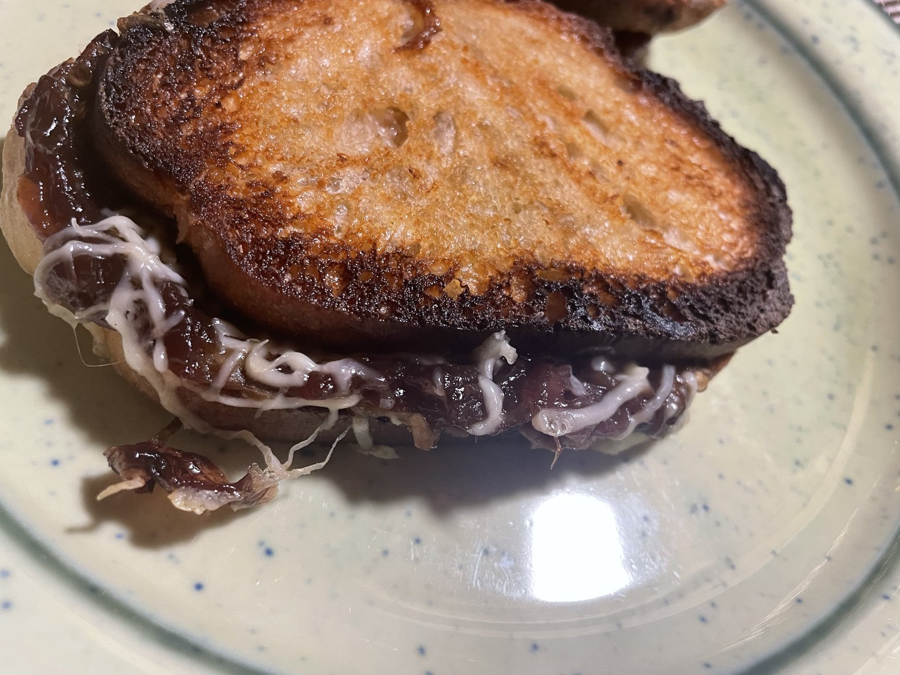

Sandwich de berenjena, cebolla caramelizada y emmental
Ingredientes
2×
- 2 cebollas
- aceite de oliva
- pizca de sal
- 1 berenjena
- 2 rebanadas de pan
- emmental rallado

Preparación
Paso 1
Cortar 2 cebollas en juliana y pocharlas a fuego lento con aceite de oliva y una pizca de sal unos 25min, hasta que estén caramelizadas.
Paso 2
Cortar 1 berenjena en láminas y dorarlas en la sartén.
Paso 3
Tostar 2 rebanadas de pan, poner encima la berenjena, la cebolla y emmental rallado, y gratinar unos minutos en el horno.
Resumen
2 cebollas
aceite de oliva
pizca de sal
Cortar pocharlas
1 berenjena
Cortar dorarlas
2 rebanadas de pan
emmental rallado
Tostar gratinar